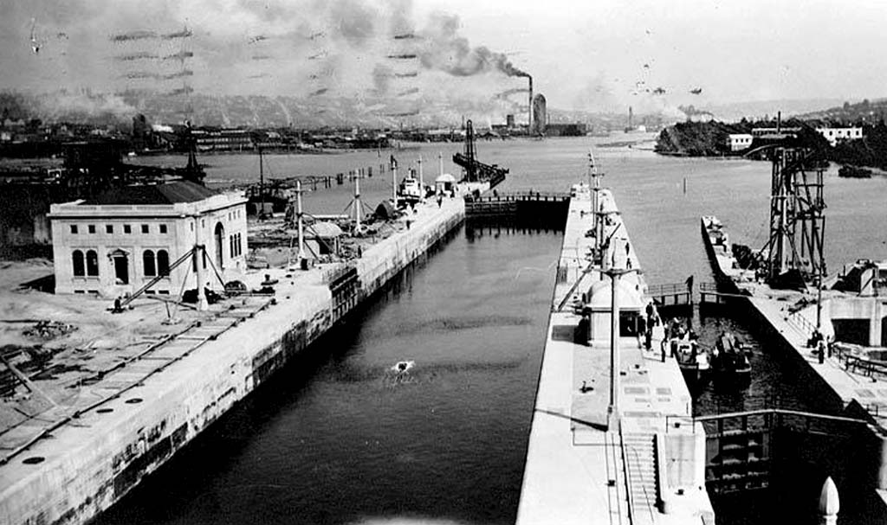
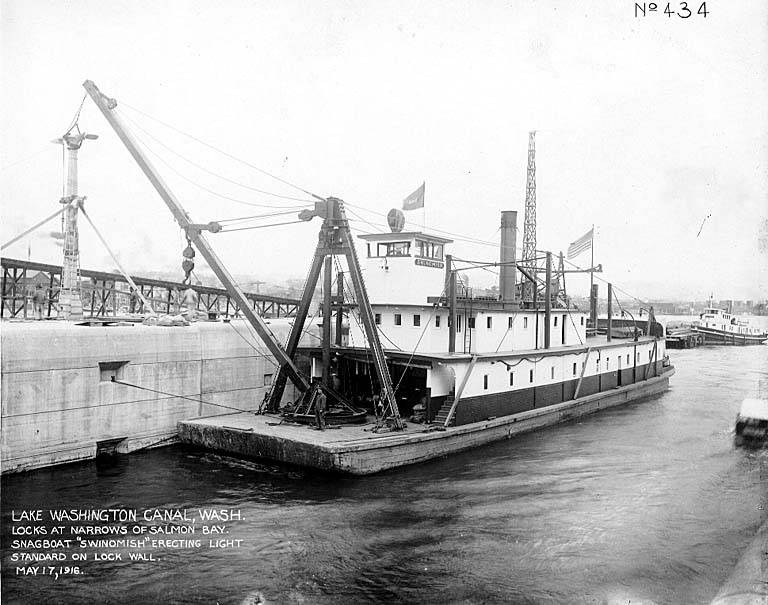
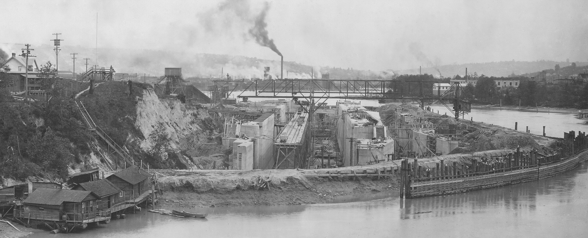
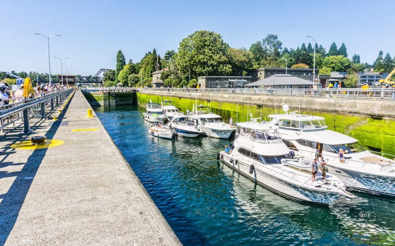
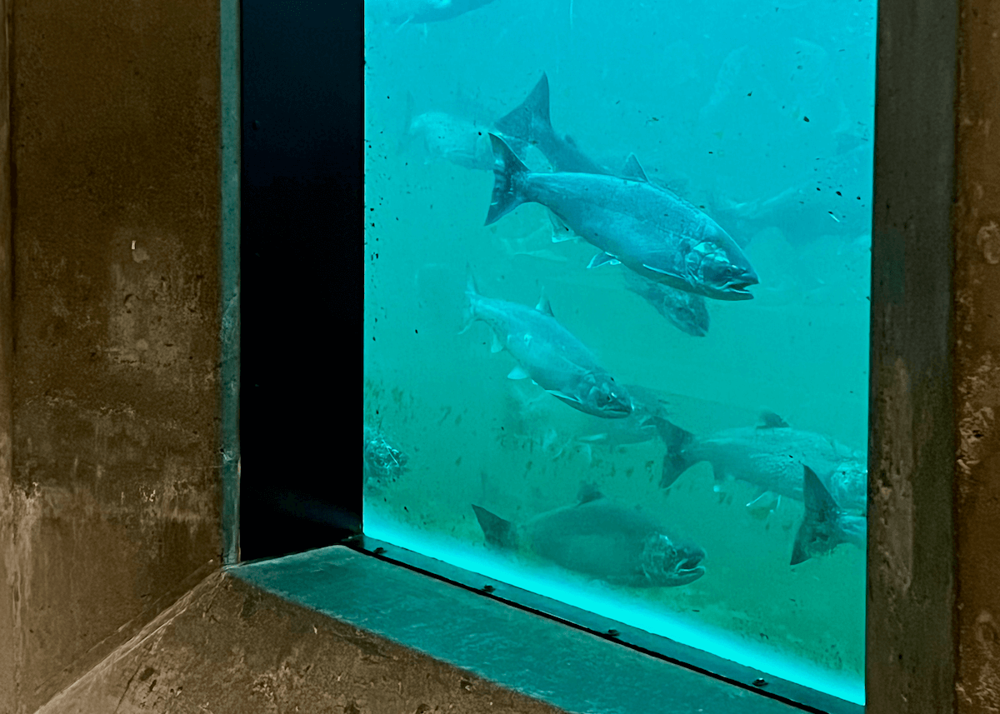
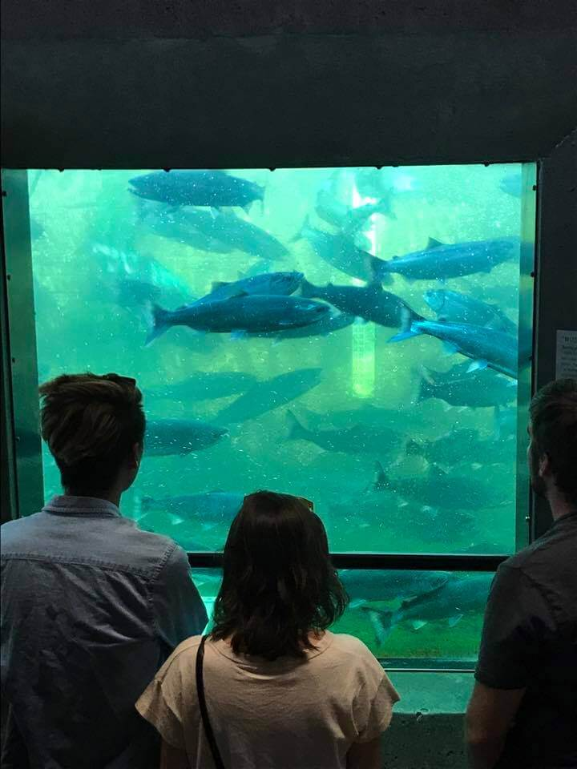

夏日午后，一艘帆船缓缓驶入西雅图（Seattle）巴拉德（Ballard）社区边缘的一道混凝土槽。闸门在船尾合拢，水面开始上涨——不是因为涨潮，而是因为工程师一百多年前设计的阀门正在向槽内注水。几分钟后，船身已高出普吉特湾（Puget Sound）海面约六米，前方的闸门徐徐打开，眼前是一片完全不同的水域：颜色更深、更平静，那是淡水。
这里是希拉姆·M·奇滕登船闸（Hiram M. Chittenden Locks），西雅图人更习惯叫它"Ballard船闸（Ballard Locks）"。它是美国西海岸最繁忙的船闸，也是全美唯一同时承担盐淡水分隔与潮汐补偿功能的船闸系统。每年有数万艘船只从这里通过，从豪华游艇到商业渔船，从皮划艇到海岸警卫队的巡逻艇。但这座船闸真正令人着迷的，不只是它的繁忙，而是它所解决的一个根本性问题：为什么在运河修建之前，海水不会倒灌进华盛顿湖（Lake Washington）？而运河修建之后，又为何需要如此精密的工程来阻止海水入侵？
一、运河之前：两个世界，天然隔绝
要理解这个问题，必须先回到1916年之前的地理格局。
华盛顿湖（Lake Washington）是一座典型的冰川湖，坐落在西雅图东侧，湖面高于平均海平面约6-6.7米（约20-22英尺）。它的水来自东面的萨马米什河（Sammamish River）和雪山融水，出口在湖的南端——一条叫做黑河（Black River）的小河。黑河向西南流，汇入达瓦米什河（Duwamish River），最终注入埃利奥特湾（Elliott Bay），流入普吉特湾（Puget Sound）。
这是关键所在：华盛顿湖的出水口在南边，而普吉特湾在西边。两者之间，隔着西雅图的整片城区和丘陵地带，根本没有直接的水道相连。普吉特湾的海水要想进入华盛顿湖，必须逆流而上，翻越地形屏障，这在自然状态下是不可能发生的。
而在华盛顿湖与普吉特湾之间，还有一片叫做萨蒙湾（Salmon Bay）的水域。萨蒙湾在运河修建之前，是一片完全开放的潮汐海湾，随着普吉特湾的潮汐涨落，时而是浅滩，时而是水湾。它与华盛顿湖之间，同样没有直接的水道连通——中间隔着陆地和湖联（Lake Union）。

运河修建之前不会发生海水倒灌，原因直接：根本没有通道。华盛顿湖的唯一出口是南边的黑河，流向与普吉特湾完全相反；萨蒙湾虽是海湾，但与华盛顿湖之间有陆地相隔。
然而，正是这种"各自独立"，成了西雅图早期发展的最大障碍。
二、一个城市的渴望：为什么要挖这条运河
19世纪末，西雅图正处于快速扩张之中。内陆的煤矿、木材和农产品需要运往海港，但运输成本极高。据美国土木工程师学会（ASCE）的记录，在运河修建之前，从内陆矿区运一批煤到西雅图港口，需要转运多达11次；木材则要靠马车在泥泞的山路上艰难拖运。
如果能在普吉特湾与华盛顿湖之间开凿一条运河，船只就可以直接从海港驶入内陆水域，整个运输体系将彻底改变。早在1854年7月4日，西雅图先驱托马斯·默瑟（Thomas Mercer）就在独立日庆典演讲中提出这一构想，但真正推动工程落地，花了整整63年时间。
争议的核心，恰恰就是海水问题。
一旦挖通运河，普吉特湾的海水就会与内陆淡水直接相连。如果处理不当，盐水将沿运河倒灌，污染华盛顿湖和湖联（Lake Union）的淡水生态，毁掉鲑鱼（salmon）的洄游通道，甚至影响沿岸居民的用水。这不是假设性的担忧，而是工程师们必须正面解决的现实难题。
📐 关键地理数据
- 华盛顿湖（Lake Washington）海拔：约6–6.7米（20–22英尺，高于平均海平面，USACE官方数据）
- 普吉特湾（Puget Sound）潮差：约3.7米（12英尺）
- 运河全长：约13公里（8英里）
- 萨蒙湾（Salmon Bay）水位因船闸而上升：约6米（20英尺）
三、奇滕登的方案：混凝土、双闸与重力排盐
1891年，美国陆军工程兵团（U.S. Army Corps of Engineers）完成了运河可行路线的调查报告。1906年，开发商詹姆斯·A·摩尔（James A. Moore）获得国会批准，提出私人运河方案，但规模过小、资金不足。同年，希拉姆·M·奇滕登（Hiram M. Chittenden）少校接任西雅图陆军区工程师，对摩尔的方案进行了根本性修改，并推动联邦政府接管这一工程。
奇滕登的第一个坚持是：必须用混凝土，而不是木材。木材会腐烂，一旦闸门失效，华盛顿湖的淡水将直接泄入普吉特湾，后果不堪设想。混凝土虽然造价更高，但能保证百年以上的使用寿命——事实证明他是对的，这座船闸至今仍在正常运行。
他的第二个坚持是：建造两座并排的船闸，而不是一座。大船闸（Large Lock）长约251.5米（825英尺）、宽约24.4米（80英尺），可同时容纳多艘大型船只；小船闸（Small Lock）长约45.7米（150英尺）、宽约8.5米（30英尺），专供小型船只和游艇使用。这样的设计既提高了通行效率，又节约了每次开闸时流失的淡水。

但最关键的工程创新，是他对盐水入侵问题的解决方案。
盐水比淡水密度更大，当船只从普吉特湾进入船闸时，闸室内的海水会随船只一起被"带入"淡水侧。奇滕登的设计在船闸上游设置了一个集盐坑（sump），利用盐水密度大、自然下沉的物理特性，将渗入的盐水收集起来，再通过管道借助重力排回普吉特湾——整个过程不需要额外的泵送能量。这是一个优雅的物理解决方案，也是奇滕登船闸被美国土木工程师学会（ASCE）列为历史地标的重要原因之一。
"奇滕登船闸是美国唯一一处同时分隔盐水与淡水、并能适应潮汐变化的船闸系统。"——美国土木工程师学会（ASCE）
四、建造：一场与水的博弈
1911年8月，工人们开始在萨蒙湾入口处修建围堰（cofferdam）——一种临时性的挡水结构，用于在水中创造干燥的施工环境。这道围堰长约700米（2,300英尺），耗时将近一年才完成。
随后，工人们挖掘了约24万立方米（245,000立方码）的土方，形成船闸坑。混凝土浇筑从1913年开始，到1914年基本完成。九道船闸闸门随后安装就位。

最后一道难题，是如何将萨蒙湾（Salmon Bay）的水位从潮汐海湾的水平提升到与内陆淡水系统相匹配的高度。工程师们在船闸外侧又建了一道带溢洪道（spillway）的围堰，通过溢洪道精确控制注水速度，用了将近三周时间，才让萨蒙湾的水位缓慢上升到足以通航的深度。
1916年2月，陆军工程兵团的工程船"奥卡斯号"（Orcas）在大船闸进行了首次试航，7月又在小船闸完成试航，均顺利通过。1916年8月3日，船闸举行非正式开放庆典，第一艘通过的民用船只是一艘名为"斯温诺米什号"（Swinomish）的清障蒸汽船。整个华盛顿湖船运运河（Lake Washington Ship Canal）的官方正式开幕典礼则在1917年7月4日举行。
值得一提的是，奇滕登本人并未能亲眼见证这一时刻。他在1909年因病被迫退休，此后以顾问身份继续参与项目，但在官方开幕典礼前数月，即1917年10月9日，他便与世长辞。为了纪念他的贡献，这座船闸以他的名字命名，并于1956年正式更名为"希拉姆·M·奇滕登船闸"（Hiram M. Chittenden Locks）。
五、一个意外的后果：黑河消失了
运河将华盛顿湖与普吉特湾直接相连，湖水找到了一条更短、更低的出路。1916年8月28日，华盛顿湖水位开始下降，最终降低了约2.7米（8.8英尺）。
这直接导致了黑河（Black River）的消失。这条华盛顿湖唯一的出口，在湖水水位下降后水量骤减，数周内几乎完全干涸。达瓦米什（Duwamish）人世代居住在黑河沿岸，以捕鱼为生——河流的消失，意味着他们的家园和生计在一夜之间化为乌有。工程的胜利，是以原住民社区的失去为代价换来的。

六、盐水入侵：一场持续至今的战斗
奇滕登的集盐坑设计在大多数时候运作良好，但并非万无一失。
根据1995年的学术研究（Mausshardt & Singleton, 1995），每当船只从普吉特湾进入船闸，闸室内的海水会随船被带入淡水侧。夏季通航高峰期，集盐坑的排盐速度跟不上盐水涌入，导致一定量的盐水渗入萨蒙湾东段的淡水区域。为此，美国陆军工程兵团在夏季实施"微冲洗"（miniflushing）程序：每次开闸前后，用淡水快速冲洗闸室，将残余盐水推回普吉特湾侧。盐淡水分隔从来不是一个静态的工程问题，而是需要持续监测和主动干预的动态过程。
七、鱼梯：为鲑鱼留下的一条路
船闸切断了鲑鱼（salmon）的洄游通道——它们需要从普吉特湾溯游而上，进入华盛顿湖及上游河流产卵，但闸门是一道无法逾越的障碍。为此，工程师们在船闸旁修建了一座鱼梯（fish ladder）——这是美国最早建造的鱼梯之一。鱼梯由一系列逐级升高的水池组成，鲑鱼借助水流一级一级跳跃而上，绕过船闸继续洄游。

每年7月至11月，数以千计的银鲑（coho salmon）、帝王鲑（chinook salmon）和虹鳟（steelhead）会从这里通过。船闸旁设有水下观察窗，游客可以透过玻璃，近距离看到鱼群在水中奋力游动的身影。这是西雅图最受欢迎的自然观察体验之一，也是这座工业设施与自然生态之间达成的一种微妙和解。

八、一百年后：仍在运转的遗产
2017年，Ballard船闸（Ballard Locks）迎来了它的百年纪念。早在1978年，船闸就已被列入美国国家历史地点登记册（National Register of Historic Places）；2017年百年纪念之际，美国土木工程师学会（ASCE）又将其列为国家历史土木工程地标（National Historic Civil Engineering Landmark），以表彰其在工程史上的卓越贡献。
今天，这里每年接待约100万名游客，是西雅图最受欢迎的免费景点之一。船闸旁边有一座植物园（Botanical Garden），由当年疏浚运河时挖出的土方填筑而成，种植了来自世界各地的500余种植物。
船闸本身仍由美国陆军工程兵团（U.S. Army Corps of Engineers）负责运营和维护。每年通过船闸的船只超过4万艘次，是美国最繁忙的船闸；大船闸（Large Lock）每次可同时通行多艘大型船只，也可容纳多达200艘小型船只排队通过。
站在船闸边，看着一艘帆船在几分钟内从海平面升至湖面，很难不对这座建筑产生敬意。它不是最宏伟的水利工程，但它解决的问题足够精妙：在一个本不应该存在通道的地方开凿了通道，在盐水与淡水之间划出精确的边界，在城市扩张与自然需求之间找到了一种——尽管并不完美的——共存方式。那道缓缓升起的闸门，每一次开合，都是对这百年工程智慧的重演。